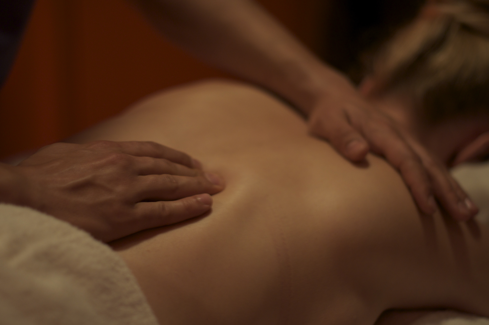

Масса́ж (от фр. masser — растирать[1], от араб. mass — касаться[1], щупать[1]) — одна из мануальных техник[2], совокупность приёмов механического и рефлекторного воздействия на ткани и органы в виде растирания, давления, вибрации, проводимых непосредственно на поверхности тела человека как руками, так и специальными аппаратами через воздушную, водную или иную среду с целью достижения лечебного или иного эффекта.
 сведения о массаже